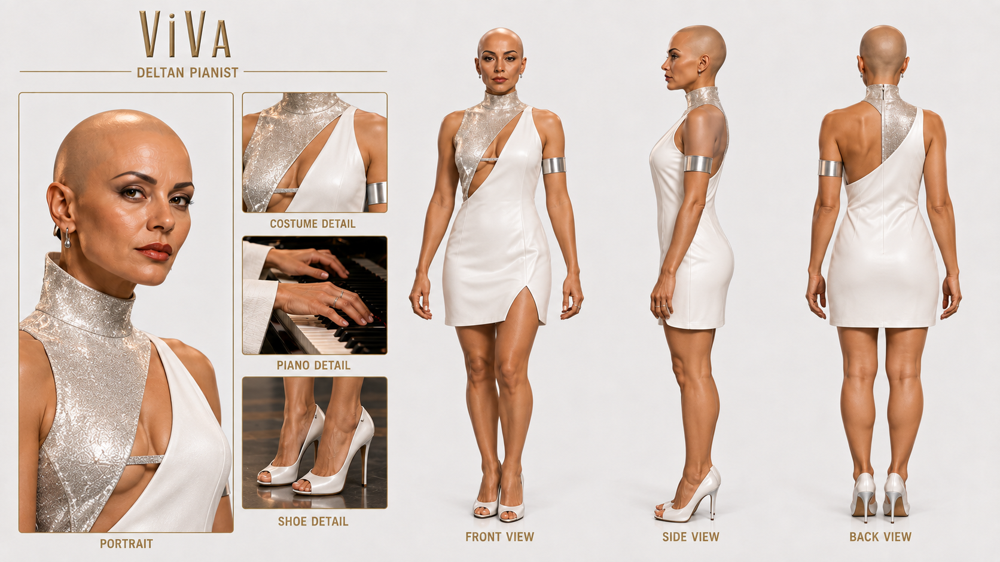
ViVa — Character Sheet
Full-resolution Deltan pianist continuity reference.
Music video · production archive
An intimate lounge performance built around ViVa’s piano, Nee-La’s saxophone, St’Vor’s Vulcan bass, and the Bluecoat Lead Singer. This page keeps the recovered source imagery inside the repository instead of depending on temporary chat or external-drive links.
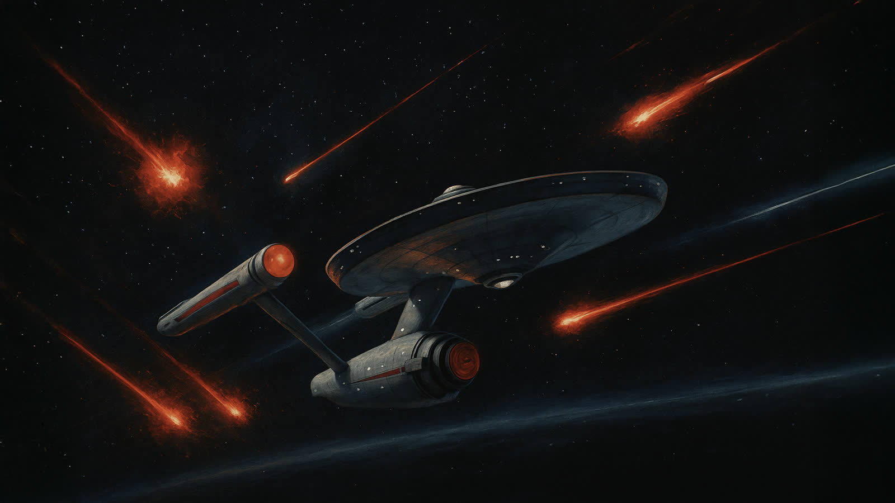
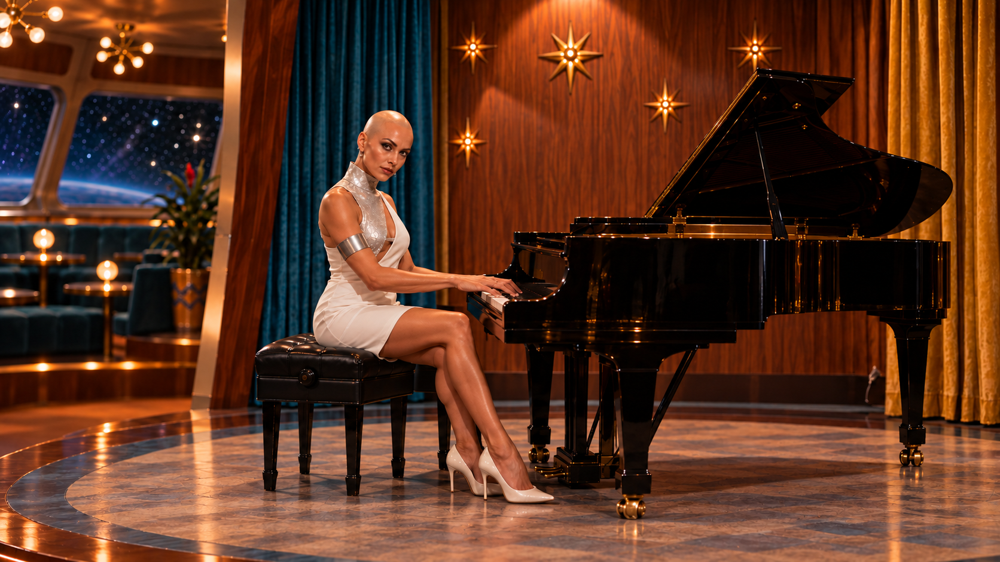
Stored directly in the repository

Full-resolution Deltan pianist continuity reference.
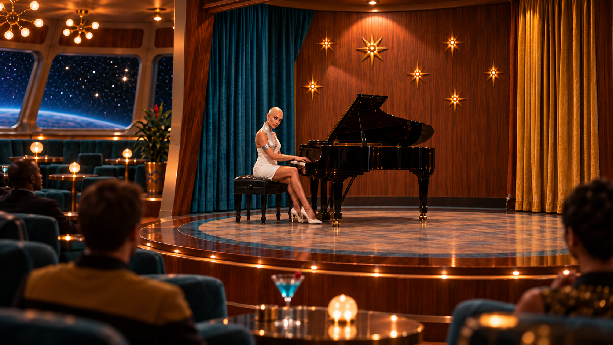
Approved full-resolution audience-view performance still.
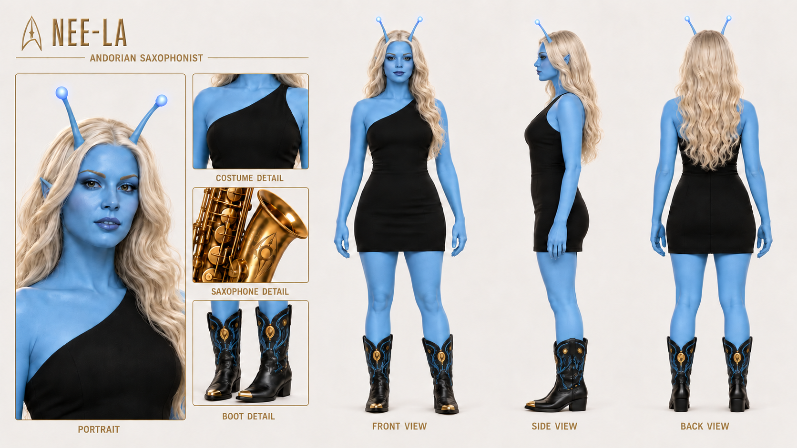
Full-resolution Andorian saxophonist continuity reference.
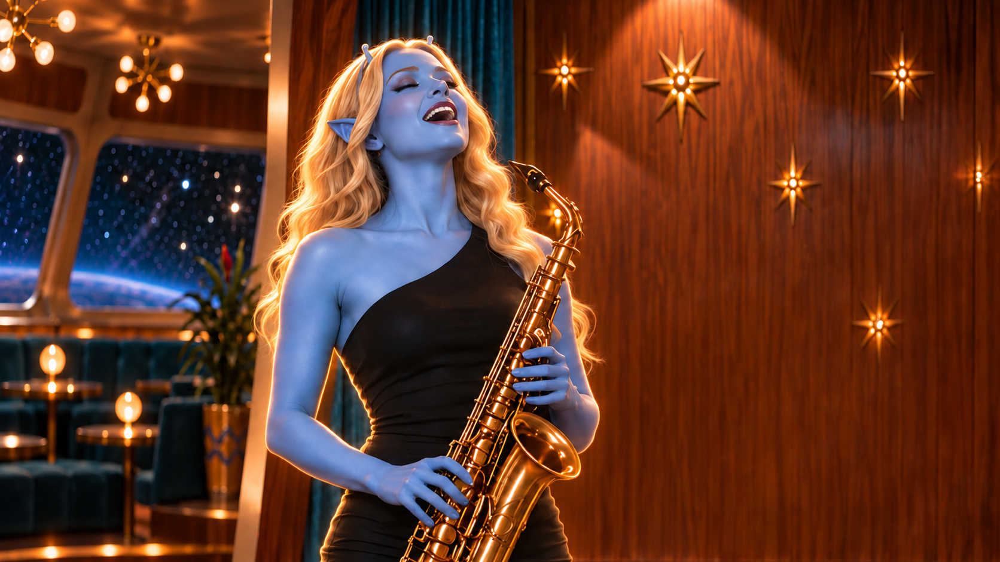
Approved full-resolution final performance image.
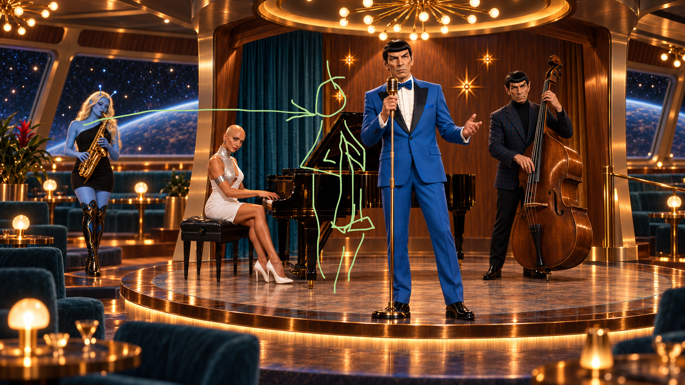
The approved lounge composition notes preserved as a production reference.
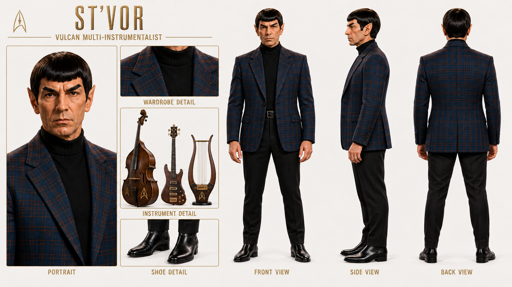
Full-resolution wardrobe, instrument, and continuity reference.
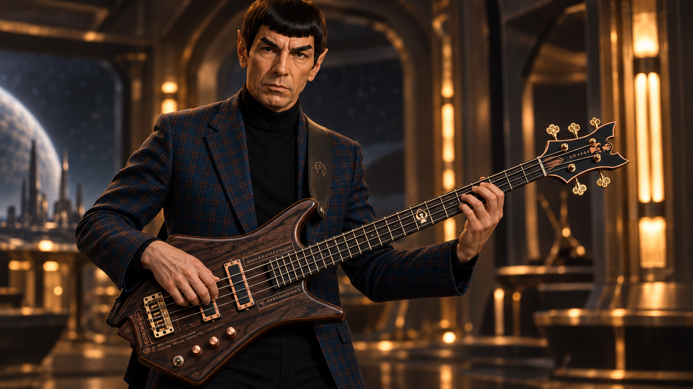
Full-resolution performance image from the recovered chat attachments.
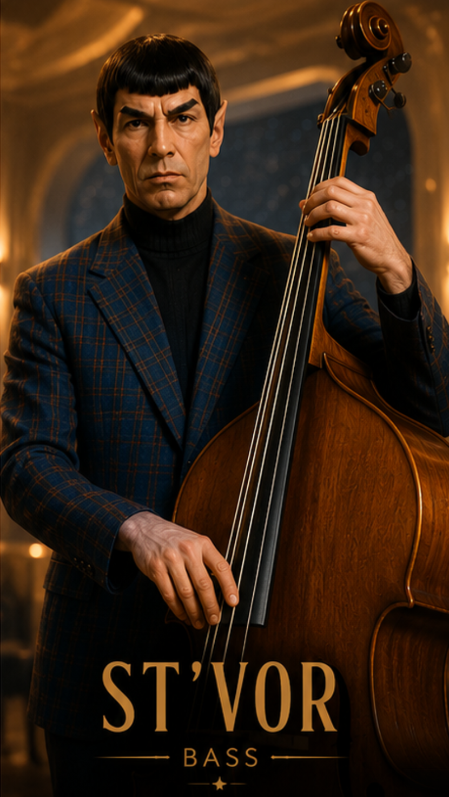
Alternate full-resolution vertical performance reference.
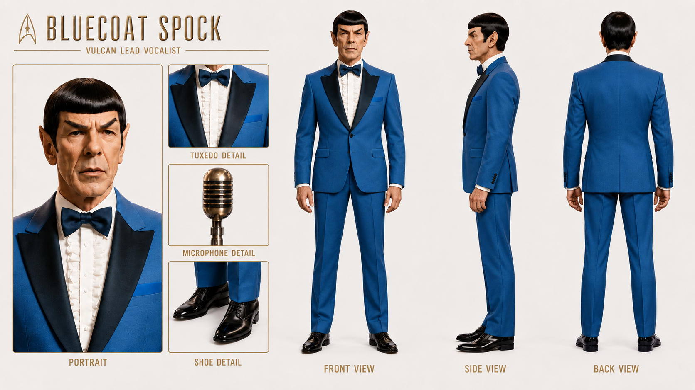
Full-resolution vocalist, tuxedo, microphone, and Vulcan-ear reference.
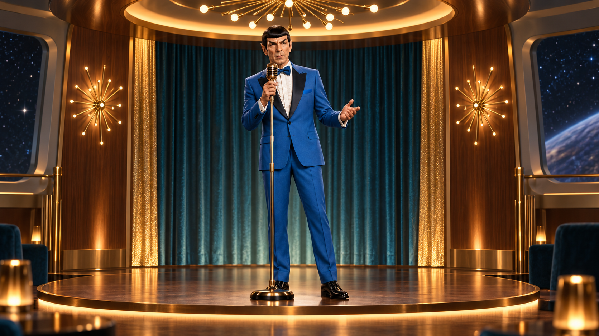
Approved full-resolution solo performance image.
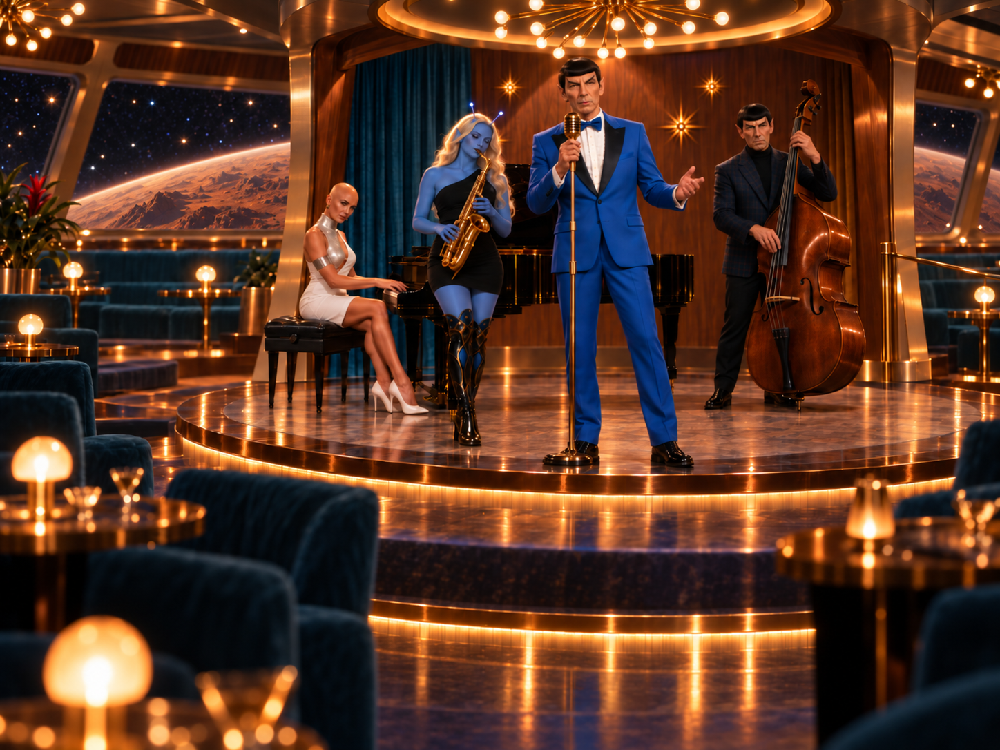
Approved full-resolution ensemble image with the Vulcan-like planet.
Camera, geography, and performer marks
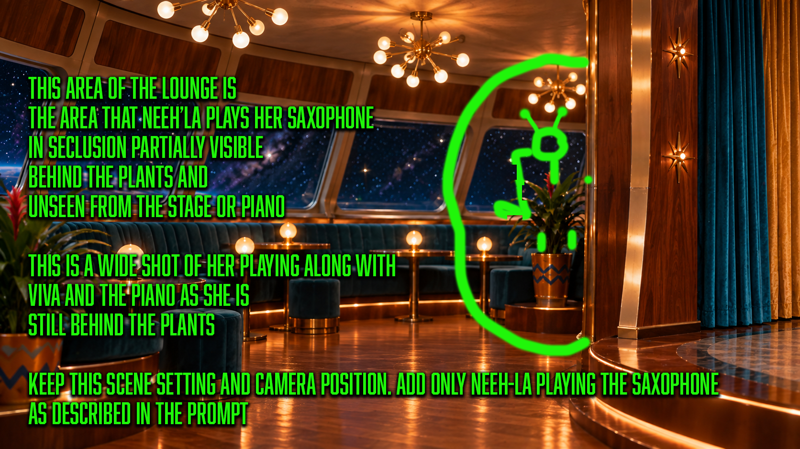
Approved camera position and the secluded saxophone-performance location.
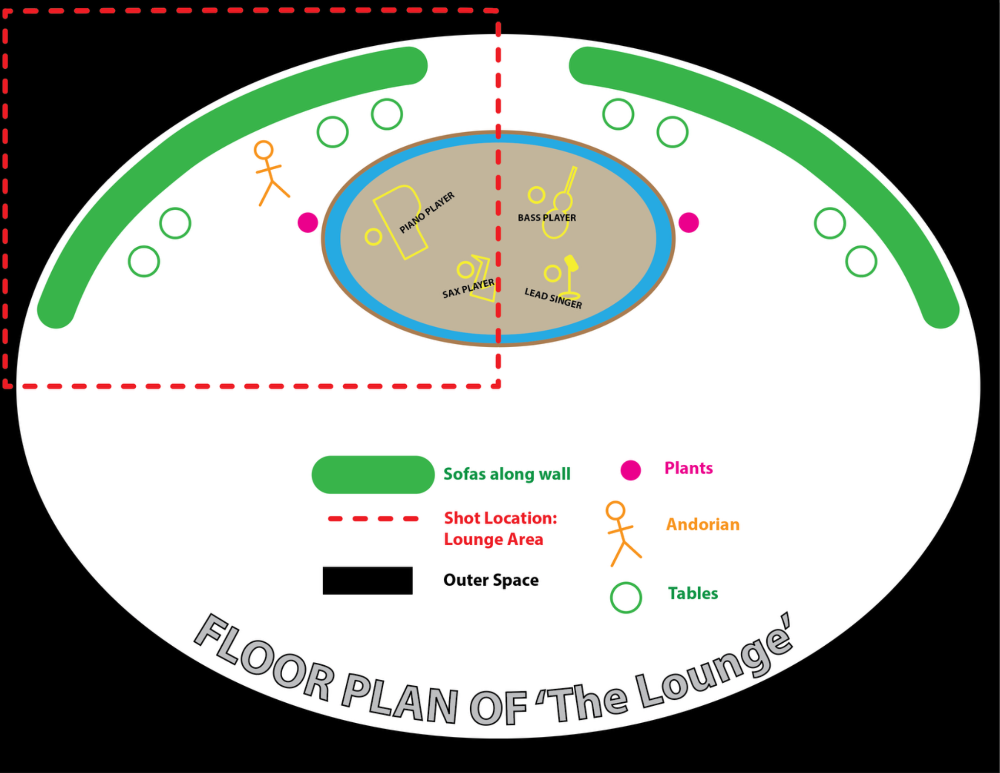
Relationship between the stage, lounge seating, windows, and Nee-La’s position.
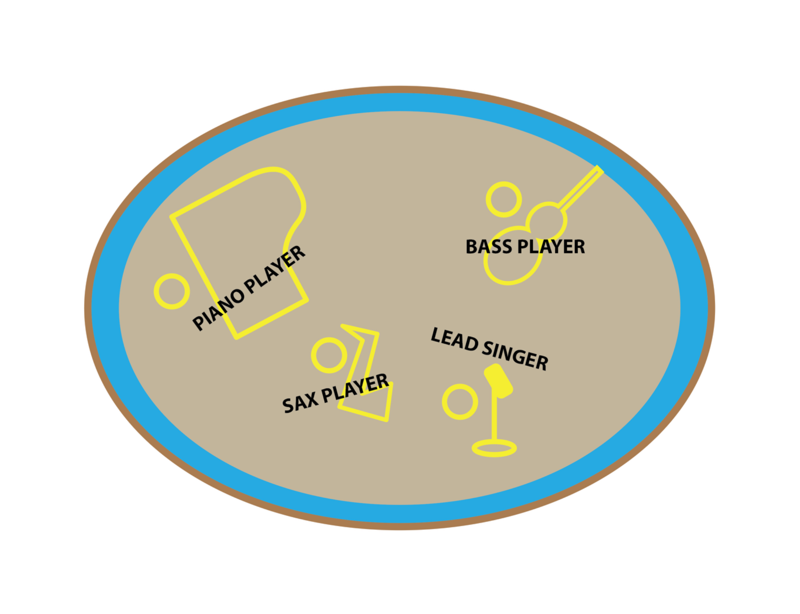
Locked positions for piano, bass, saxophone, and lead vocalist.
The current sequence audio and ViVa/Nee-La meeting script are already stored in the repository.
The previous update only captured small library previews—or no usable file at all—for these locked images. Replacing them will complete the archive without changing the page structure: